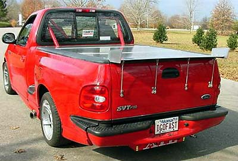
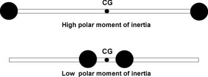
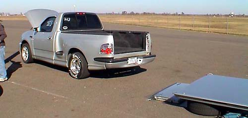
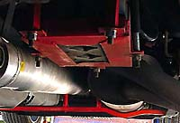
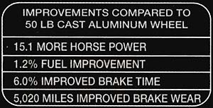

|
weight reduction |
|
 Stan Martin's truck |
||||||||||||||||||||||||||||||||||||||||||||||||||||||||||||||||||||||||||||||||||
|
Even with the short bed and standard cab, the cast-iron block, twin-beam truck frame, and heavy truck suspension and driveline conspire to cause a Lightning tip the scales at nearly 4,700 lbs. (even without the driver and 170 lbs of fuel in the 25-gallon tank). Plus, the heavy engine and light rear cause the weight distribution to come in at a suboptimal 57/43%. JJ's SVT weighed a stock Lightning with driver (145 lbs) and 1/2 tank of gas. His findings:
LF 1,477 / RF 1,301 = 2,778 The obvious goals--shave weight and move it to the rear wherever possible. This is difficult for a street-driven truck, as there is not much to remove and most of it is in the rear.  Where weight is taken off is as important a consideration as how much weight is taken off. Weight in ahead of the front axle or behind the rear axle is undesirable, as it increases the polar moment of inertia (picture the bar that high-wire artists use to keep them stable). As shown in the graph to the right, the farther that weight gets from the centerline of the vehicle, the more the vehicle resists direction changes. Additionally, once the rear gives up and the truck goes into oversteer, the pendulum effect causes weight in the back (especially behind the rear axle) to want to keep going around. Just ask someone who drives an air-cooled VW or Porsche 911. Removal of the spare and hitch, for instance, helps lower the polar moment of inertia. Removal of the spare tire, jack, and spare winch (spare weighs about 65 lbs., jack 7 lbs., winch 7 lbs.) and the class II trailer hitch (about 45 lbs.) are great places to save weight--behind the rear axle. For people who remove the spare permanently, removal of the spare winch saves anther 5 lbs. or so (only two bolts are holding it in). Note that the rear of the truck will sit slightly higher after this weight is removed (one owner measured a 3/8" rise).  Some drag racers go so far as to remove the passenger seat (77 lbs.) and tailgate (feels like about 30 lbs.) at the track. Total replacement of the seats with lightweight racing seats is a viable option for road racers who need more lateral support. Removal of the spare, jack, and trailer hitch alone shaves off 115 lbs. Shave off a total of 200 lbs. (4.3%) and the net effect on power-to-weight ratio is the same as adding about 15 HP--in addition to the handling improvements. The Hotchkis suspension is lighter. For the rear leafs, 36 lbs. each versus 48 lbs. for the stock springs. The front springs are about the same (14 stock, 15 Hotchkis). The Hotchkis anti-away bars are lighter than stock -- 16 lbs. versus the stock 19 lbs. for the front, 6 lbs. versus the stock 9 lbs. for the rear. So the whole Hotchkis suspension saves about 28 lbs. The Hellwig front bar weighs a whopping 29 lbs. Fiberglass roll pans can replace the stock rear bumper, which must save 50 lbs. or so. Of course, this loses the hitch hole in the bumper, so if the class II hitch is also removed, a hidden hitch for the roll pan will be required for towing. Two steps forward, one step back. Images of some roll pans can be found here. An aftermarket lower blower pulley will save precious reciprocating weight. The stock steel pulley is 11 lbs. (used to reduce noise/vibration/harshness). Going to a cageless aluminum pulley will save as much as 8 lbs. The cage is needed only to support the mass of the heavy steel pulley. Switch to a lighter pulley and the cage is not needed. Racing seats can save a ton of weight. By my scales, the stock seats weigh 144 lbs. (pass = 82, driver = 62). The stock seats weigh about 120 lbs. Racing seats can be as little as 25 pounds each including the mounts. Going to an electric fan saves little weight, but does save reciprocating mass. The stock fan/clutch assembly weighs about 12 lbs! So replacing the lower blower pulley and fan alone can save about 20 lbs of precious reciprocating mass. A lightweight battery can save 10-20 lbs.  Relocating the battery to the right front of the bed gets some weight off the front axle and opens up room in the engine compartment. Another option is the battery relocation kit from Ruslow. This looks like a better option for road racing, as it places the weight lower. By my calculations, just moving the 75lb battery to the rear can change the stock 57f/43r weight distribution a point-and-a-half to 55.4/44.5. More details on battery relocation are here. |
||||||||||||||||||||||||||||||||||||||||||||||||||||||||||||||||||||||||||||||||||
|
Fiberglass bed covers are often enormously heavy. Plus, that weight is up high where it can do the most harm on handling. In contrast, a soft bed cover weighs next to nothing. I bought a plastic 55 lb UnderCover, which splits the difference. Aftermarket hoods will add at least 20 lbs. over the stock featherweight aluminum hood. Traction bars can be very heavy. The Metco Lower Trak-Links (which I chose) are probably the heaviest, weighing in at a portly 42 lbs., most of which is unsprung or semi-unsprung weight. I liked the design of the Metcos enough to take the weight penalty over some lighter alternatives. Plus, since the rear axle weighs several hundred pounds, there's no reason to sweat a few more. Aftermarket wheels, especially 20's or larger, can result in a weight gain. The stock '99-00 wheels weigh 32 lbs. each and the '01-02 wheels weigh 35 lbs. each. It is reported that the 20" '01-02 factory replicas weigh 48 lbs each! The 20" Harley wheels weigh 81 lbs. with the tire. Wheels are the worst place in the world to add weight--the weight is both unsprung and rotating mass.  According to a December 2002 advertisement from Center Line Wheels touting its 22 lb. rotary forged wheels, see the box to the right. D unno. Just reporting what they said. In the January 2003 issue of Automobile magazine, the author compared performance versus stock for some 23" OZ Racing Vela wheels. Read about it here. |
||||||||||||||||||||||||||||||||||||||||||||||||||||||||||||||||||||||||||||||||||
| Here's what I have done: | ||||||||||||||||||||||||||||||||||||||||||||||||||||||||||||||||||||||||||||||||||
|
|
||||||||||||||||||||||||||||||||||||||||||||||||||||||||||||||||||||||||||||||||||
|
With the addition of the chassis
braces,
coolers, and tonneau, you can see that I had to shed a
bunch of other things just to stay about even.
Also note that most of the weight reduction is in the rear, which does nothing to help the already front-heavy front-to-rear balance. Note that there is a school of thought which holds that removal of sprung weight without removal of an equivalent proportion of unsprung weight may actually cause the truck to handle worse. So, the theory goes, if you remove 10% of the sprung weight, you should also remove a least 10% of the unsprung weight. Whether this theory is accurate is really academic for our purposes, though, as there are precious few options for reducing unsprung weight. That's the price for racing a farm implement. |
||||||||||||||||||||||||||||||||||||||||||||||||||||||||||||||||||||||||||||||||||
{kind=link}